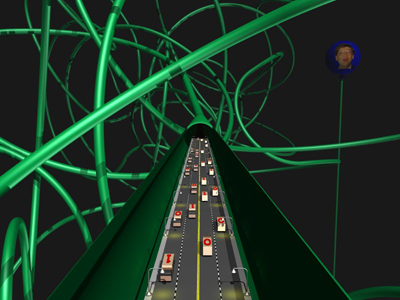

The information superhighway was a popular term used through the 1990s to refer to digital communication systems. It is associated with Al Gore. There are a number of definitions of this term. Wired Style: Principles of English Usage in the Digital Age defines the term as "the whole digital enchilada - interactive, cable, broadband, 500-channel [...] blame the cliche on then-Senator Al Gore jr. who introduced it at a 1978 meeting of computer industry folk, in homage to his father, Senator Albert Gore Sr".
The McGraw-Hill Computer Desktop Encyclopedia defines the term as, "a proposed high-speed communications system that was touted by the Clinton/Gore administration to enhance education in America in the 21st Century. Its purpose was to help all citizens regardless of their income level. The Internet was originally cited as a model for this superhighway; however, with the explosion of the World Wide Web, the Internet became the information superhighway".
The Oxford English Dictionary (OED) defines the term as "a route or network for the high-speed transfer of information; esp. (a) a proposed national fiber-optic network in the United States; (b) the Internet." The OED also cites usage of this term in three periodicals:
Nam June Paik, a 20th century South Korean born American video artist, claims to have coined the term in 1974. "I used the term (information superhighway) in a study I wrote for the Rockefeller Foundation in 1974. I thought: if you create a highway, then people are going to invent cars. That's dialectics. If you create electronic highways, something has to happen."